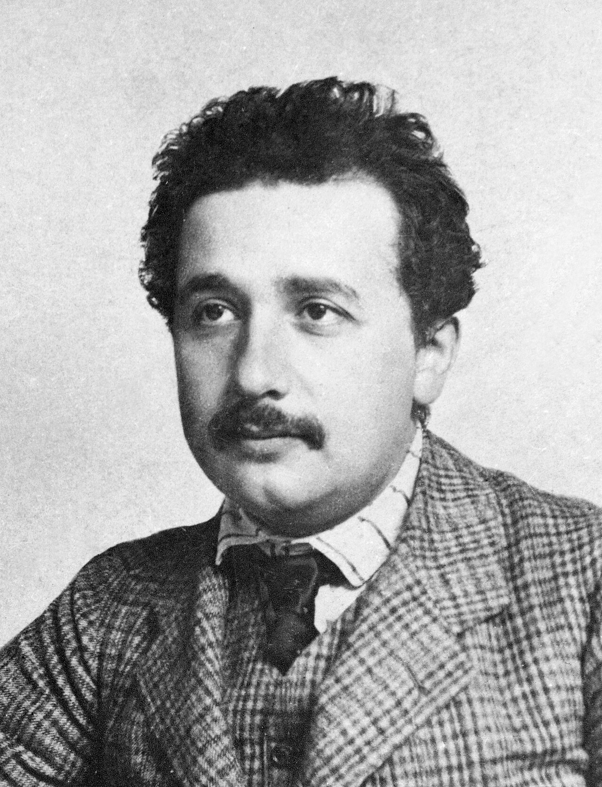

Mathematics · Timekeeping
Clocks & Telling Time
Time is the invisible river we all swim in — ancient civilizations watched shadows, modern smartphones ping satellites, and physicists discovered that time itself bends near the speed of light. Explore how humans learned to measure, divide, and wonder about time — from dragging hands on a clock face to relativistic starships.
Interactive Clock Laboratory
Drag the hour or minute hands directly, toggle angle guides, or switch to history's ancient timekeepers.
Obelisk Shadow Clock
One of the earliest timekeepers. Cast a moving shadow across stone markers as the sun crossed the sky, dividing the sunlit day into parts.
Sundial
A refined shadow clock. The angled gnomon (pointer) casts a shadow onto marked hour lines, telling local solar time.
Water Clock (Clepsydra)
Used regulated dripping water to measure intervals independently of the sun — essential on cloudy days and at night.
Hourglass
Sand trickles through a narrow neck at a steady rate. Used at sea where rolling waves disrupted water clocks and pendulums.
How to Read Clocks & Calculate Elapsed Time
An analog clock is a circle divided into 12 hours. A full circle measures 360°, so each hour mark spans exactly 30° (360 ÷ 12 = 30). Each hour space is divided into 5 minute steps — giving 60 minute ticks around the dial, each measuring 6° (360 ÷ 60 = 6).
The Three Hands
Completes one turn every 12 hours, drifting forward steadily by 0.5° per minute between numbers.
Counts by fives at each big number and completes one full circle every 60 minutes (6° per minute).
Sweeps around in 60 seconds at 6° per second — ticking on quartz watches or gliding on mechanical ones.
AM, PM & Why 60?
Because Earth's day lasts 24 hours while a traditional dial shows 12, we split the day in two: AM (ante meridiem — "before noon") runs from midnight (12:00 AM) to just before noon; PM (post meridiem — "after noon") runs from noon (12:00 PM) to midnight. 24-hour time (00:00–23:59) removes the guesswork.
Why 60 minutes in an hour and 360° in a circle? Ancient Babylonian mathematicians used a base-60 (sexagesimal) number system because 60 divides cleanly by 2, 3, 4, 5, 6, 10, 12, 15, 20, and 30 — making half hours, quarter hours, and thirds effortless.

Elapsed Time Jump Visualizer
To find how much time passes between two clocks without subtracting base-60 in your head, jump to the nearest friendly hour (hills), leap across whole hours (mountains), and finish with remaining minutes (rocks).
Read & Set the Clock Challenge
What time is shown on this clock?
The History of Telling Time
Long before clocks existed, people read the sky. The journey from shadows on dirt to atomic oscillations is one of the greatest engineering stories in human history.
- Sun, Water & Early Gears
- Pendulums, Longitude & Time Zones
- Atomic Clocks & Light Speed
-
Ancient Egypt & MesopotamiaObelisks & Sundials
The earliest timekeepers were simply shadows. Egyptians erected tall obelisks — stone pillars that cast predictable shadows throughout the day. By 1500 BC they had purpose-built shadow clocks with marked intervals. Sundials were soon in use across Mesopotamia, Greece, and Rome. The flaw? They only work on sunny days and the hours varied by season.
-
Egypt & ChinaWater Clocks (Clepsydra)
To tell time at night or indoors, ancients built clepsydras — vessels with a small hole that let water drip at a steady rate. The level of water remaining indicated the hour. Greek and Chinese engineers refined them into remarkably accurate devices. Aristotle mentioned the clepsydra used in Athenian law courts to limit how long speakers could talk!
-
Medieval EuropeMechanical Clocks & Church Towers
The invention of the escapement mechanism — a clever gear that rocks back and forth, releasing energy in precise ticks — transformed timekeeping forever. Huge iron clocks appeared in church and tower bells across Europe. They couldn't show minutes yet (hands came later), but they could ring the hour and call monks to prayer with uncanny regularity.
-
NetherlandsChristiaan Huygens & the Pendulum Clock
Dutch scientist Christiaan Huygens invented the pendulum clock, which kept time to within one minute per day — a massive leap in precision. A pendulum of a given length always swings in the same period; Huygens realized this property (demonstrated earlier by Galileo) could regulate clock gears with mathematical perfection.
-
EnglandJohn Harrison & the Marine Chronometer
Ships at sea needed to know their longitude — which required knowing the exact time back in Greenwich while also knowing the local solar time. After decades of work, clockmaker John Harrison built the H4 chronometer, a pocketwatch-sized device so accurate it lost only five seconds during an 81-day voyage to Jamaica. It solved the greatest navigation problem of the age.
-
GlobalStandard Time Zones
Until railways connected cities, every town kept its own local solar time. When trains needed reliable schedules, chaos ensued. In 1884, the International Meridian Conference established Greenwich, England as the Prime Meridian (0° longitude) and divided Earth into 24 time zones of 15° each — one hour apart.
-
Modern Physics & NavigationAtomic Clocks & GPS Time
Today's most precise timekeepers use the vibration of cesium-133 atoms, which oscillate 9,192,631,770 times per second. This defines the official international second. GPS satellites carry atomic clocks and beam time signals accurate to within 100 nanoseconds. Without precise time, GPS navigation would drift by miles within minutes.
-
ComputingMaking Invisible Time Visible: Grace Hopper’s Nanoseconds
As electronic computers began executing millions of instructions per second, people struggled to grasp invisible fractions of time like microseconds and nanoseconds. Computer pioneer Rear Admiral Grace Hopper made invisible time tangible: she carried pieces of wire cut to exactly 11.8 inches (30 cm) — the maximum distance electricity or light can travel in one nanosecond (a billionth of a second). To illustrate a microsecond (one millionth of a second), she brought a coil of wire 984 feet (300 m) long — stretching nearly three football fields!
The Physical Length of Time: Grace Hopper's Wire Lab
How long is a billionth of a second? Grace Hopper proved that because electricity and light travel at approximately 300,000 km/s (186,000 miles/s), every unit of time is also a physical distance. Select a preset or type any duration in nanoseconds to see the length of wire it represents.

Why this changed computer science: When early software engineers asked why sending data to a satellite took so many microseconds, Hopper handed them a 984-foot coil of wire and explained that electricity simply cannot travel through space or copper faster than the speed of light. Watch Grace Hopper demonstrate this in her 1982 NSA lecture →
Time in the Beginning — Genesis and the Biblical Day
One of the oldest recorded concepts of organized time comes from the Bible's very first book: Genesis. Long before clocks or calendars, the author of Genesis described the creation of the world in an ordered sequence of days — and gave us the first definition of a day that appears in human literature.
"And God called the light Day, and the darkness he called Night. And the evening and the morning were the first day."
— Genesis 1:5 (KJV)Notice something remarkable: the biblical day begins at evening, not morning. "Evening and morning" — darkness first, then light. This ancient Hebrew understanding of a day is why the Jewish Sabbath still begins at sundown on Friday and ends at nightfall Saturday. It is also the origin of our modern concept that midnight (not sunrise) marks the boundary between days.
Genesis chapters 1–2 describe creation organized into a structured seven-day week — a pattern so culturally embedded that virtually every civilization on Earth still uses a seven-day week today, regardless of religion or calendar system. The repetitive phrase "and there was evening, and there was morning" acts as a kind of ancient timestamp — the world's first chronological record.
The Seven Days of Creation
Day 4 is especially striking: the sun, moon, and stars are explicitly called timekeepers — "signs to mark seasons, days, and years." This is precisely what ancient astronomers used them for. The Genesis author's intuition that celestial bodies govern time would shape every calendar humans built for the next 5,000 years.
The Greatest Gift: Perfect Timing
Ask any stand-up comedian or professional musician what separates good from great, and they'll give you the same answer: timing. Jack Benny built an entire career on a single pause — holding silence for up to 30 seconds while an audience laughed harder with every passing moment. Miles Davis did something similar with music, landing notes a hair behind the beat to create a cool, unhurried feeling that felt more honest than perfection. In both cases the performer wasn't ignoring time — they were controlling it with mathematical precision, bending the listener's sense of when something should arrive. As Duke Ellington put it: "It don't mean a thing if it ain't got that swing."
World Time Zones & Sunlight Terminator
Earth spins 360° every 24 hours — 15° per hour. Scrub UTC time to watch sunlight sweep across the globe, and click any two cities to compare them.
Americas — Local Times Right Now
Why show 24 reference bands? Earth completes one rotation (360°) every 24 hours, so 15° of longitude corresponds to one hour of solar rotation. The straight bands on the map show that mathematical ideal. Real civil time-zone boundaries bend around countries, states, and islands.
The International Date Line sits roughly at 180° longitude — the opposite side of Earth from Greenwich. Cross it heading west and you gain a day; head east and you lose one. Pilots who fly trans-Pacific routes regularly "time travel" across it.
Not all offsets are whole hours—or fixed year-round. India is UTC+5:30, Nepal is UTC+5:45, and parts of Australia use half-hour offsets. The clocks above use named IANA zones, so daylight-saving changes are applied for each city instead of relying on a fixed offset.
Traveling Through Time — History, Books & Science Fiction
Here is a truth every reader and history student knows intuitively: you can travel through time. Open a history book and you are transported to ancient Rome, the French Revolution, or the moon landing. Read a primary source — a diary, a letter, an ancient inscription — and you inhabit the mind of someone centuries dead. This is time travel, made possible by the miracle of written language.
Great historians don't just record dates — they reconstruct the texture of time: how bread smelled in a medieval market, the panic of soldiers at Gettysburg, the wonder of watching a spaceship launch. Reading history stretches your sense of time outward and backward, giving you a life thousands of years longer than your own.
Science Fiction and the Physics of Tomorrow
Science fiction writers took the desire to travel in time and pushed it into physics. They asked: What if the rules of time could be broken? What followed was a literature that helped the public understand — and inspired scientists to explore — some of the deepest ideas in modern physics.
Time Dilation — Faster Motion & Bent Time
Albert Einstein's Special Theory of Relativity (1905) delivered one of the most astonishing predictions in the history of science: time is not constant. The faster you move through space, the slower time passes for you compared to someone standing still. This effect is called time dilation, and it is not science fiction — GPS satellites, particle accelerators, and muons falling from the upper atmosphere all confirm it daily.
Twin Clocks: Live Relative Tick Rate
Lorentz Curve: γ = 1 / √(1 − v²/c²)
What is the Lorentz Factor?
The formula for time dilation is: t' = t × γ, where γ (gamma) is the Lorentz factor: γ = 1 / √(1 − v²/c²). At everyday speeds the factor is essentially 1 (no noticeable dilation). But as v approaches c (the speed of light, ~299,792 km/s), γ shoots upward — meaning time on the ship runs much slower than on Earth.
GPS & Relativistic Engineering: GPS satellites orbiting at 14,000 km/h lose about 7 microseconds per day from special relativity (speed) while gaining 45 microseconds per day from general relativity (weaker gravity), for a net +38 microseconds per day. Without correcting for both, GPS navigation would drift by kilometers in a single day.
Twin Paradox: Imagine you have a twin. You board a spaceship and travel to a nearby star and back at 90% the speed of light (γ ≈ 2.29). While your trip feels like 5 years, your twin on Earth ages 11.5 years (6.5 years more!). To make Earth age a full 20 years during your 5-year voyage (γ = 4), your ship would need to fly at 96.8% the speed of light — try both presets above!

From Clock Time to Deep Time
A clock measures seconds, minutes, and hours. Deep time describes Earth's history across millions and billions of years. To understand those numbers, start with something you already know: one second.
Predict → calculate → explain
If you counted once every second without stopping, would reaching a billion take days, months, or years? Make a prediction before revealing the comparison.
Each comma separates a group of three digits. Moving from thousand to million, or million to billion, multiplies the number by 1,000. Scientific notation (10³, 10⁶, 10⁹) records how many factors of ten make the number.
Reveal the counting times
- 1,000 seconds ÷ 60 ≈ 16.7 minutes.
- 1,000,000 seconds ÷ 86,400 ≈ 11.6 days.
- 1,000,000,000 seconds ÷ 31,536,000 ≈ 31.7 years.
One day has 24 × 60 × 60 = 86,400 seconds. For this arithmetic, one year means 365 days. A billion seconds takes 1,000 times as long as a million seconds. Explain why adding three zeros makes such a huge difference.
Fit Earth's history into one day
Earth is approximately 4.54 billion years old. Imagine its formation at 00:00 and today at the end of a single 24-hour day. This is a proportional mathematical model: equal lengths on the line represent equal numbers of years.
Try it: select 5,000 years ago, then zoom to the last million years. Why does the marker become easier to distinguish from today? Zooming changes the scale; the actual duration stays the same.
The math: seconds before the end = years ago ÷ years in the window × 86,400. In the whole-Earth view, one model second represents about 52,546 real years. The final 5,000 years occupy only about 0.095 model seconds! Geologists divide deep time into eons, eras, periods, and epochs; those divisions have unequal lengths.
Earth's age is an estimate based on radiometric dating of rocks and meteorites. This scientific timescale measures physical history; the earlier Genesis section discusses a religious text and its day-and-week framework. Source: USGS — Age of the Earth ↗
Large-number challenges
Use the place-value cards and conversion rule above. Check each answer, then explain your calculation to a partner.
Practice Problems
1. An analog clock shows the hour hand pointing straight at 3 and the minute hand pointing straight up at 12. What time does it show? (e.g. 3 or 3:00)
2. How many degrees does the minute hand move in exactly 15 minutes?
3. Earth is divided into how many standard 15° time zones?
4. Each standard time zone covers how many degrees of longitude?
5. According to Genesis, on which numbered day did God create the sun and moon?
6. A spaceship travels at 50% the speed of light. Using the Lorentz factor γ = 1 / √(1 − v²/c²), what is γ rounded to 2 decimal places? (Hint: √0.75 ≈ 0.866)
7. Grace Hopper famously explained a nanosecond (one billionth of a second) by cutting a wire to the maximum distance light can travel in that time. About how long is this wire in inches?
8. Recess starts at 10:45 AM and ends at 11:20 AM. How many minutes long is recess?
9. A science workshop runs from 11:30 AM to 2:15 PM. What is the total elapsed time in minutes?
10. Write 3:45 PM in 24-hour digital time (e.g. 15:45).